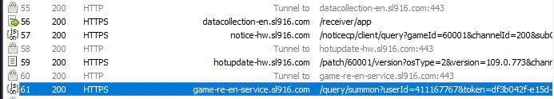

1. Получение файла круток из игры Reverse 1999
Чтобы импортировать крутки в базу, нужен JSON-файл. Его можно получить с помощью Fiddler Classic
Оф. сайт
- Запустите Fiddler и игру Reverse 1999
- Откройте историю круток (Summon->Record)
- В Fiddler найдите запрос на историю круток, который выглядит примерно так:

https://game-re-en-service.sl916.com/query/summon?userId=xxx&token=xxx
- Выберите эту строку и нажмите ПКМ->Copy->Just URL
- Вставьте ссылку в браузер и сохраните как файл - ПКМ по странице->Сохранить как